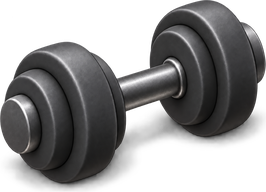
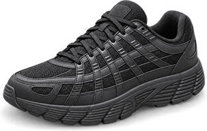
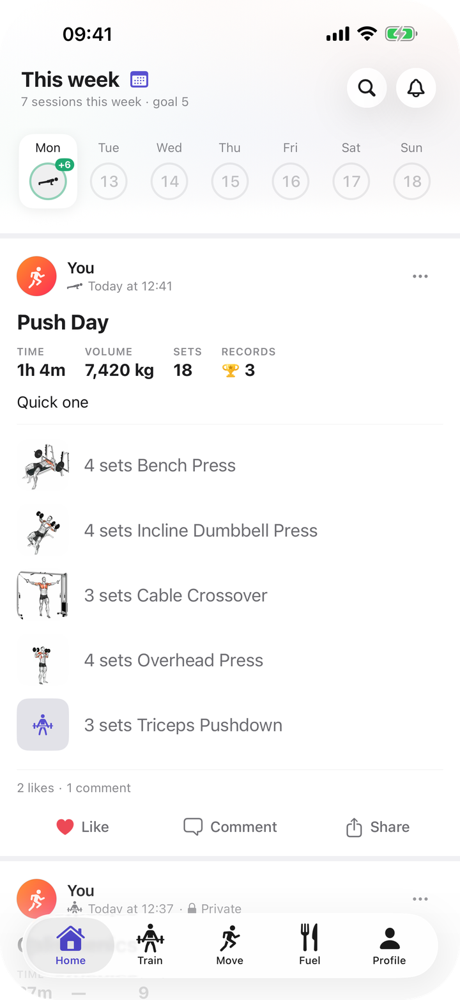

Bayda for iPhone
One app for your workouts, runs and meals.
Take a photo of your plate and Bayda estimates the calories and macros. Log every set, map every run, and watch your week come together.
Now in testing. Coming to the App Store soon.
Built for the whole week. A heavy session on Monday, a run on Wednesday, dinner out on Friday. Bayda keeps all of it in one calm place.
Fuel
Snap it, scan it or search it.
Point your camera at a meal and Bayda estimates what is on the plate, with calories, protein, carbs and fat. Scan the barcode on packaged food, or search the food list and save the recipes you cook often.
- Photo scan for meals
- Barcode scanner
- Recipes you build once and reuse
- Daily calorie and macro targets

Train
Every set, one tap.
Start a routine or an empty workout and log as you go. The rest timer follows you to the lock screen, and Bayda spots your personal bests for you.
- Routines you can repeat
- Rest timer on the lock screen
- Personal bests, found for you
- A weekly goal and a day streak

Move
Runs, walks and rides, split by split.
Record outdoors with GPS and get your route, pace and splits. Workouts from Apple Health come in too, including the ones you record on Apple Watch.
- Live route, pace and distance
- Splits, elevation and heart rate zones
- Walks and rides as well as runs
- Imports from Apple Health
Progress
See how far you have come.
Charts for every lift and every distance, your best efforts in one list, and a body page for weigh-ins and your goal weight.
- Exercise progress charts
- Sets per muscle, week by week
- Running trends
- Weight trend and goal
Privacy
Your data, your call.
Stored in the EU
Your account lives on servers in Ireland.
You choose who sees it
Each workout can go to Anyone on Bayda, your Followers or Only me.
No ads, no trackers
No advertising, no third-party analytics, and your data is never sold.
Yours to take or delete
Export everything as a file, or delete your account from Settings at any time.
Get Bayda for iPhone.
Now in testing. Coming to the App Store soon.
Friends
Share it with friends, if you want to.
Follow friends, cheer on their workouts and leave a comment. Tag the people you trained with. Or keep it all to yourself: every workout has its own audience.
